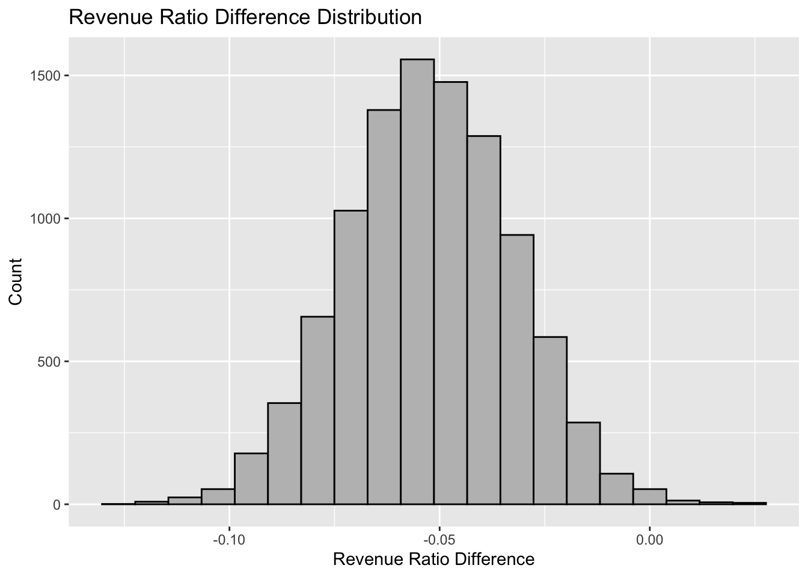
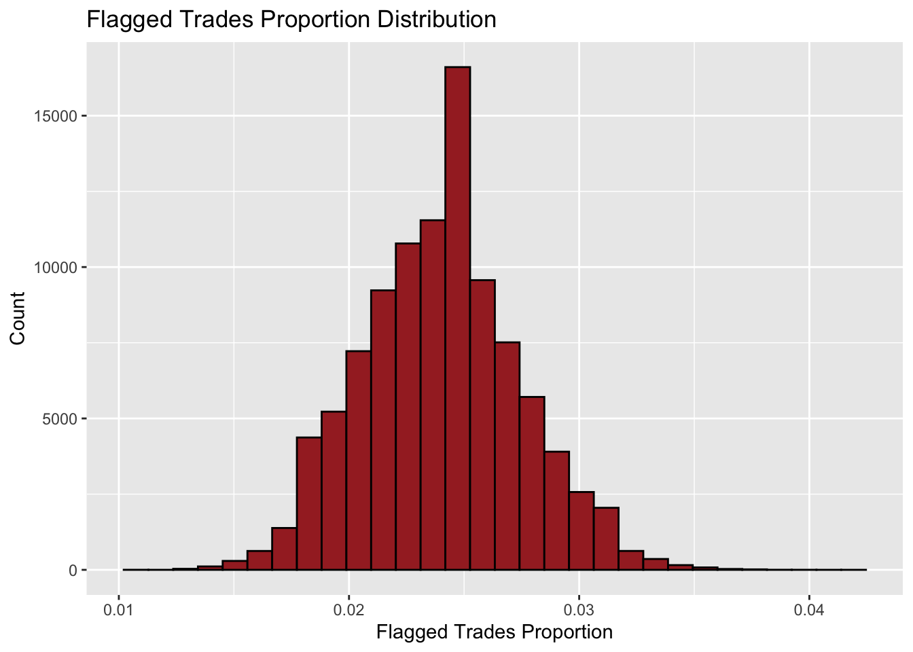
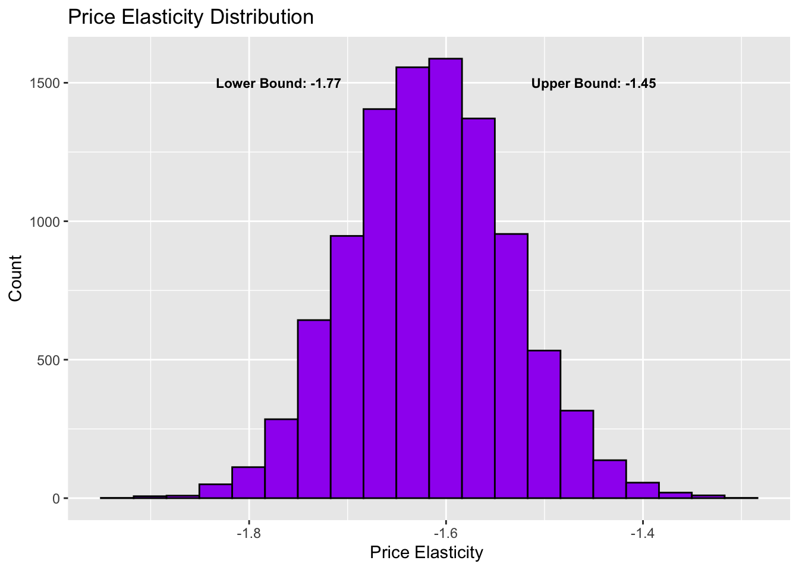

Chapter 4 Homework 4
4.1 Problem 1 NBC Pilot Survey
4.1.1 Part A
Question: Does either “Living with Ed” or “My Name is Earl” make audiences happier than the other one?
Approach: I will use t-test to check if the mean of “happy” scores for “Living with Ed” and “My Name is Earl” have any difference. Thus, in this case, the null hypothesis is the mean difference to be 0, which indicates that they do not have any difference in terms of their means of happy “score”.
Results:
##
## Welch Two Sample t-test
##
## data: ed$Q1_Happy and earl$Q1_Happy
## t = 1.1676, df = 162.57, p-value = 0.2447
## alternative hypothesis: true difference in means is not equal to 0
## 95 percent confidence interval:
## -0.1030341 0.4011371
## sample estimates:
## mean of x mean of y
## 3.926829 3.777778Conclusion: From the t test summary above, we can see 0 is in the 95% confidence interval. Thus, we fail to reject the null hypothesis here. Therefore, I conclude that there is not a significant evidence showing either “Living with Ed” or “My Name is Earl” is more funny than the other one.
4.1.2 Part B
Question: Is either “The Biggest Loser” or “The Apprentice: Los Angeles” more annoying than the other one?
Approach: Likewise, I am going to use t-test to check if they have any difference in terms of the mean of “annoyed” scores. Therefore, the null hypothesis is the mean difference to be 0, which suggests that they have no difference on the mean of “annoyed” scores.
Results:
##
## Welch Two Sample t-test
##
## data: loser$Q1_Annoyed and la$Q1_Annoyed
## t = -2.1032, df = 300.66, p-value = 0.03628
## alternative hypothesis: true difference in means is not equal to 0
## 95 percent confidence interval:
## -0.52455614 -0.01743792
## sample estimates:
## mean of x mean of y
## 2.036232 2.307229Conclusion: From the t test summary above, we can see the 95% confident interval doesn’t contain 0, which means our null hypothesis has to be rejected, so they really have difference in annoying level. To be more specific, The “Apprentice: Los Angeles” is more annoying than “The Biggest Loser”, because it has higher average “annoyed” score.
4.1.3 Part C
Question: As we expect, what proportion of American TV audiences would think “Dancing with the Stars” is confusing?
Approach: I am going to use proportion test with null hypothesis as P(not confusing) = P(confusing).
Results:
##
## 1-sample proportions test with continuity correction
##
## data: $ [with success = TRUE]stars [with success = TRUE]confusing [with success = TRUE]
## X-squared = 127.65, df = 1, p-value < 2.2e-16
## alternative hypothesis: true p is not equal to 0.5
## 95 percent confidence interval:
## 0.04453431 0.12893254
## sample estimates:
## p
## 0.07734807Conclusion: From the proportions test summary above, we can see the null hypothesis fails to hold. Also, the 95% confident interval of actual proportion is from around 4.5% to 12.9%. In other words, The proportion of American audiences we expect to be befuddled by “Dancing with the Stars” falls into range between 4.5% to 12.9% with 95% confidence level.
4.2 Problem 2 Ebay
Question: Does the difference of revenue ratios between treatment group and control group indicate the paid search advertising on Google generates more revenue for EBay?
Approach: I am going to bootstrap 10000 times of mean of revenue ratios for both treatment group and control group, and then compute their differences. Once I have 10000 times of differences, I can create a 95% confidence interval of all differences to see whether 0 falls in to it or not. If 0 is in the interval, I can conclude that no significant evidence shows that paid search advertising boosts the revenue for EBay. If the interval falls into positive side, than I can say that paid search advertising diminish the revenue. If the interval falls into negative side, than I can say that paid search advertising boosts the revenue.
Results:
Let us see the histogram of the 10000 times bootstrap of the revenue ratio difference between treatmentgroup and control group:

## name lower upper level method estimate
## 1 result -0.09137557 -0.01456059 0.95 percentile -0.05228145Conclusion: From the summary above, we can see the 95% confidence interval falls below 0, which means with 95% confident level, the real difference between the revenue ratio mean of treatment group and control group is in the range of around -9% and -1%. Thus, I conclude that paid search advertising does boost the revenue.
4.3 Problem 3 Iron Bank
In the case, I set the null hypothesis as that the proportion of flagged trades from Iron Bank is the same as 2.4%. In other words, they were clean under this algorithm.
My test statistic will be the proportion of flagged trades out of 2021 in each simulation.
Let us get into the simulation part. First, the histogram below shows distribution of the proportion in 100000 simulations:

Next, let us look at the P-value:
## [1] 0.000188As we see, the P value is around 0.02%, which means given that the null hypothesis is true, the chance of observing the number of flagged trades to be equal to or larger than 70 should be around 0.02%. It is very close to 0, so the null hypothesis fails to hold so that we claim that Iron Bank violated the “Inside Trading” laws.
One_sentence conclusion: If the P value is larger than 2.5%, then the null hypothesis will look plausible to me.
Defensive statements: My presumptive confidence level is 95% and since this is one-side test, we should ignore the probability on the lower extreme side. Therefore, 95% confidence interval + 2.5%(the chance of the other extreme side) = 97.5%. Thus, if the P value here is larger than 2.5%, then it would be in 95% confidence interval. Hence, the null hypothesis fails to be rejected. Therefore, I would claim that there is not a significant evidence showing that the proportion of flagged trades from Iron Bank is not 2.4%.
4.4 Problem 4 Milk, Demend, Revisited

Caption: This figure shows 10000 times bootstrap of linear regression of demand on the price. X-axis represents the price elasticity of demand and the y-axis stands for count for the values of the price elasticity of demand. In this graph, ‘lower Bound’ means the lower bound of 95% confidence interval and ‘Upper Bound’ means the upper bound of 95% confidence interval. Thus, the whole 95% confidence interval is from ‘lower Bound’ to ‘Upper Bound’.
4.5 Problem 5 Standard-error Calculations
4.5.1 Part A
4.5.1.1 i
First, we have
\[ E(\hat{p}-\hat{q}) = E(\hat{p})-E(\hat{q}) \]
Then, we have
\[ E(\hat{p}) = E(\overline{X_N}) = E(\frac{\sum_{i=1}^{N} X_i}{N}) = \frac{Np}{N} = p \]
Also, we have
\[ E(\hat{q}) = E(\overline{Y_M}) = E(\frac{\sum_{i=1}^{M} Y_i}{M}) = \frac{Mq}{M} = q \]
Thus, we have
\[ E(\hat{p}-\hat{q}) = E(\hat{p})-E(\hat{q})=p-q \]
4.5.1.2 ii
As we know, the variance of a random variable X following Bernoulli distribution should be:
\[ Var(X) = p(1-p) \]
\[ Var(\hat{p}) = Var(\overline{X_N}) = Var(\frac{X_1+X_2+...+X_N}{N})\\=\frac{1}{N^2}\sum_{i=1}^{N}Var(X_i) = \frac{1}{N^2}*Np(1-p)=\frac{p(1-p)}{N} \]
Thus, the standard deviation should be
\[ Std(\hat{p}) = \sqrt{\frac{p(1-p)}{N}} \]
4.5.2 Part B
The expected value of this estimator should be
\[ E(\hat{\triangle}) = E(\overline{X_N}-\overline{Y_M})=E(\overline{X_N})-E(\overline{Y_M})=\mu_X-\mu_Y \]
The standard error of this estimator should be
\[ Std(\hat{\triangle}) = \sqrt{Var(\hat{\triangle})}=\sqrt{Var(\overline{X_N}-\overline{Y_M})}=\sqrt{Var(\overline{X_N})-Var(\overline{Y_M})}\\=\sqrt{\frac{1}{N^2}\sum_{i=1}^{N}Var(X_i)+\frac{1}{M^2}\sum_{i=1}^{M}Var(Y_i)}=\sqrt{\frac{N}{N^2}{\sigma_X}^2+\frac{M}{M^2}{\sigma_Y}^2}=\sqrt{\frac{{\sigma_X}^2}{N}-\frac{{\sigma_Y}^2}{M}} \]